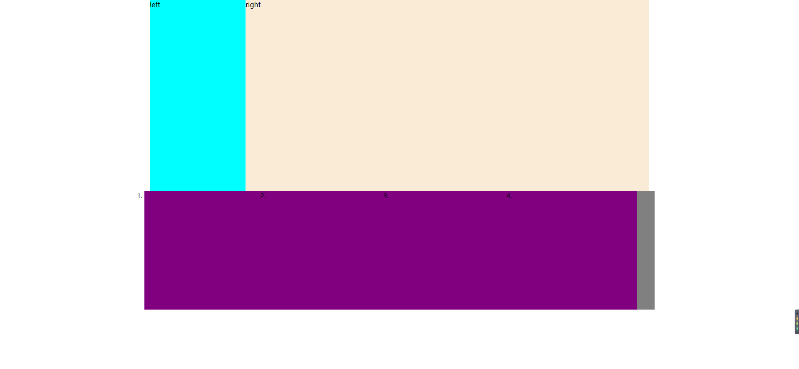

传统网页布局的三种方式
网页布局的本质——用来CSS来摆放盒子。把盒子摆放在相应的位置
CSS提供了三种传统的布局方式：
普通流（标准流）
浮动
浮动最典型的应用：可以让多个块级元素一行内排列显示。
网页布局第一准则：多个块级元素纵向排列找标准流，多个块级元素横向排列找浮动
float属性用于创建浮动框，将其移动到一边，直到左边缘或者有边缘触及包含或者另一个浮动框的边缘
选择器{float：属性值;}| 属性值 | 描述 |
|---|---|
| none | 元素不浮动（默认值） |
| left | 元素向左浮动 |
| right | 元素向右浮动 |
浮动特性
浮动案例

<!DOCTYPE html>
<html>
<head>
<meta charset="utf-8">
<title></title>
<style>
*{
margin: 0px;
padding: 0px;
}
.box{
width: 1200px;
height: 460px;
background-color: gray;
margin: 0 auto;
}
.left{
float: left;
width: 230px;
height: 460px;
background-color: aqua;
}
.right{
width: 970px;
height: 460px;
background-color: antiquewhite;
float: left;
}
.box1{
width: 1226px;
height: 285px;
background-color: #808080;
margin: 0 auto;
}
.box1 li{
width: 296px;
height: 285px;
background-color: purple;
float: left;
}
</style>
</head>
<body>
<div class="box">
<div class="left">left</div>
<div class="right">right</div>
</div>
<ol class="box1">
<li></li>
<li></li>
<li></li>
<li></li>
</ol>
</body>
</html>
清除浮动
清除浮动的本质是清除浮动元素造成的影响
如果父盒子本身有高度，则不需要清除浮动
清除浮动之后，父级就会根据浮动的自盒子自动检测高度。父级有了高度，就不会影响下面的标准流
选择器{
clear：属性值；
}| 属性值 | 描述 |
|---|---|
| left | 不允许左侧右浮动元素 |
| right | 不允许右侧右浮动元素 |
| both | 同时清除左右两侧的浮动元素 |
清除浮动的方法
额外标签法也称为隔墙法，是W3C推荐的做法
父级添加overflow属性
父级添加：after伪属性
：after方式是额外标签的升级版，也是给父级添加
.clearfix:after{
content:"";
display:block;
height:0;
clear:both;
visibility:hidden;
}
.clearfix{
/**IE6\7专有/
*zoom：1；
}父级添加双伪属性
.clearfix:before，
.clearfix:after{
content:"";
display:table;
}
.clearfix:after{
clear：both；
}
.clearfix{
/**IE6\7专有/
*zoom：1；
}| 清除浮动的方法 | 优点 | 缺点 |
|---|---|---|
| 额外标签法 | 通俗易懂，书写方便 | 添加去多无意义的标签 |
| 父级overflow：hidden; | 书写简单 | 溢出隐藏 |
| 父级：after伪元素 | 结构语义化正确 | 兼容性问题 |
| 父级双伪元素 | 结构语义话正确 | 兼容性问题 |